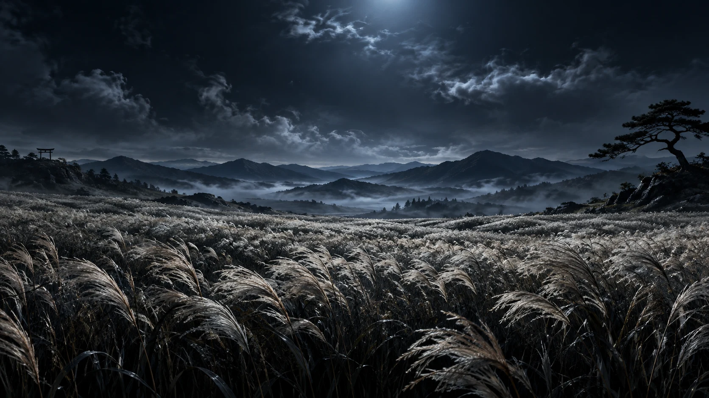

01 / ИНТЕРАКТИВНЫЙ ВЕБ
LAST
WIND
Интерактивный фильм.
Прокрутка управляет камерой и светом.

01 / ИНТЕРАКТИВНЫЙ ВЕБ
Интерактивный фильм.
Прокрутка управляет камерой и светом.
02 / НЕЗАВИСИМЫЙ КОНЦЕПТ
Концепт сайта об авиации.
Видео и переходы при прокрутке.
03 / ЗАКАЗНАЯ РАЗРАБОТКА
Магазин одежды на заказ.
Каталог, корзина и управление товарами.
ДАЛЬШЕ — БОЛЬШЕ
13 проектов с описанием задач,
технологий и моей роли.
НЕМНОГО ОБО МНЕ
Учусь на бизнес-информатике в НИУ ВШЭ. Делаю сайты на React и Next.js, приложения на React Native и Expo, ботов на Python.
Разработал интернет-магазин Faith over Fear на заказ. «Лекторий» делаю вместе с Владиком, «Хроносфера» — командный учебный проект. Использую AI для разработки и проверяю полученный результат.
ЕСТЬ ПРОЕКТ ИЛИ ИДЕЯ?
Давайте обсудим.